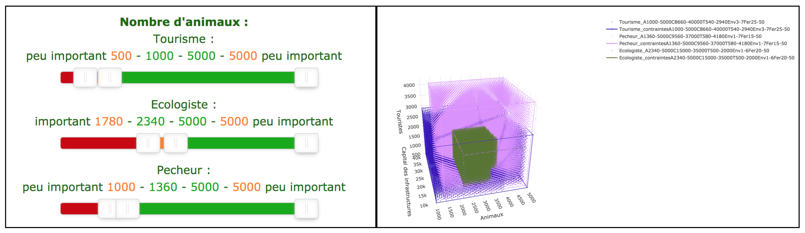
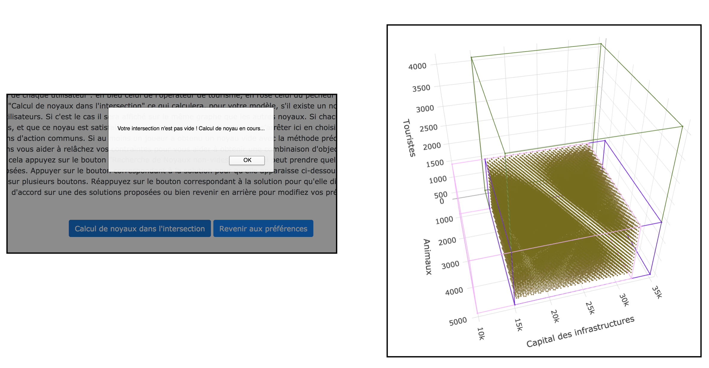
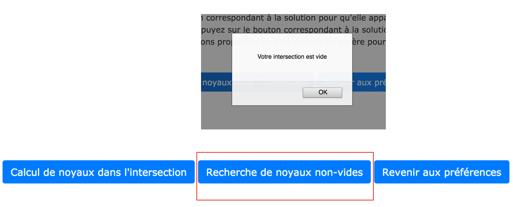
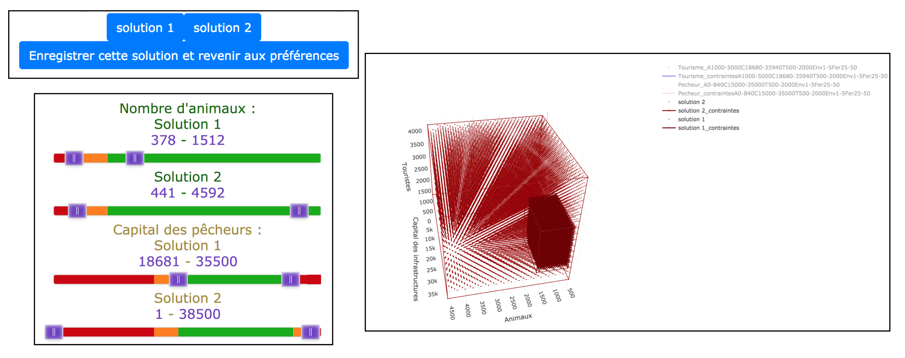

Merci de cocher les critéres lse plus importants pour vous (trois maximum), c'est à dire que si c'est un maximum vous ne voulez pas qu'il diminue et si c'est un minimum vous ne voulez pas qu'il augmente.
Le nombre minimum d'animaux
Le nombre maximum d'animaux
Le Capital minimum des pêcheurs
Le Capital maximum des pêcheurs
Le nombre minimum de touristes
Le nombre maximum de touristes
Taille maximale des mailles de filets
Taille minimale des mailles de filets
La proportion minimum du parc fermée aux touristes
La proportion maximum du parc fermée aux touristes
Phase suivante : Négociation
Maintenant que votre noyau est non vide et que vous avez indiquez les critères qui vous semblent importants, nous pouvons regarder s'il existe un noyau non vide
satisfaisant les préférences de tout les utilisateurs. Sur la page suivante, lorsque tout les utilisateurs auront choisit leurs préférences,
les verrez apparaitre, ainsi que leurs noyaux :

Afin de vérifier s'il existe un noyau non vide, nous commençons par regarder si les préférences des utilisateurs ont une intersection non vide.
Vous pouvez lancer le calcul en appuyant sur le bouton "Calcul de noyaux dans l'intersection".
Il y a donc deux cas possible :
Cas de l'intersection non-vide et noyaux dans l'intersection non-vides:
Ensuite, vous pouvez appuyer sur "Calcul de noyaux dans l'intersection" ce qui calculera, pour votre modèle,
s'il existe un noyau non vide dans l'intersection des préférences de tous les utilisateurs. Si c'est le cas il sera affiché sur le même graphe que
les autres noyaux. Si chacun a obtenu un noyau non vide dans l'intersection des contraintes, et que ce noyau est satisfaisant pour tout le monde,
la partie peut s'arrêter ici en choisissant l'intersection de vos préférences comme objectifs et moyens d'action communs.

Cas de l'intersection vide ou noyau dans l'intersection vide :
Si au moins un joueur a obtenu un noyau vide avec la méthode précédente (calcul dans l'intersection de contraintes) nous pouvons vous aider à
relâchez vos contraintes pour vous aider à obtenir une combinaison d'objectifs et de moyens d'action qui vous conviennent à tous.
Pour cela appuyez sur le bouton "Recherche de Noyaux non-vides".

Le calcul peut prendre quelques minutes. Une fois le calcul fini, plusieurs solutions sont proposées. Appuyer sur le bouton correspondant à la
solution pour qu'elle apparaisse. Vous pouvez ainsi comparer plusieurs solutions si vous appuyez sur plusieurs boutons. Réappuyez sur le
bouton correspondant à la solution pour qu'elle disparaisse. Vous pourrez vous mettre d'accord sur une des solutions proposées ou bien revenir en
arrière pour modifiez vos préférences en appuyant sur le bouton correspondant.

Un fois que vous êtes d'accord sur une solution, ou bien sur des préférences
(minimum et maximum sur le nombre de tortues, touristes ect...), vous pouvez appuyez sur le bouton "quitter la partie" afin de répondre au questionnaire.
Si vous n'etes pas d'accord avec les autres membres, vous n'etes pas obligé d'atteindre un consensus, dans ce cas la solution proposée par le pêcheur sera celle mise en place.